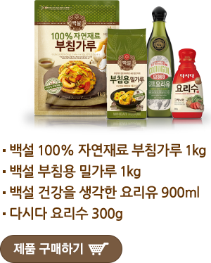
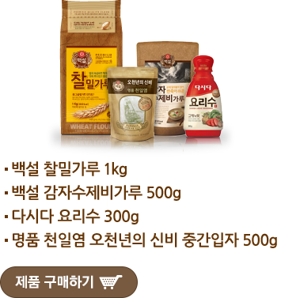

비오는 날 먹고 싶은 레시피를 댓글로 남겨주세요~
추첨을 통해 비오는 날에 딱 어울리는 선물을 드립니다~
장대비가 내리는 날 막걸리와 잘 어울리는 VS 비오는 저녁, 따끈한 국물요리가 생각날 때
장대비가 내리는 날 막걸리와 잘 어울리는
해물파전
"/>
불고기 깻잎전
옥고감 삼색전
비오는 저녁, 따끈한 국물요리가 생각날 때
땡초수제비
바지락 삼색 수제비
사천식 해물짬뽕
막걸리와 잘 어울리는 파전 Kit

국물요리가 생각날 때 수제비 Kit

* 참여방법:비오는 날 거부할 수 없는 절대 레시피를 SNS로 공유하고 먹고 싶은 레시피를 댓글로 등록해 주세요.
* 당첨자 발표일:8월 4일(금)
경품목록